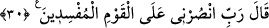

çakıl taşlarını yoldan gelip geçenlere atarlardı. Yolculardan kime isâbet ederse, atan
kimse ona sâhip olur ve onu nikahlar ve ayrıca ona üç dirhem de borç yüklerdi. Onlar
arasında böyle hükmeden bir kadı vardı. Bunun için denilmiştir ki: “Falan, Sodom
Kadısı’ndan daha zorbadır.”
Hadiste buyrulmuştur ki: “Ufak taşlarla vurmaktan sakının. Çünkü bu ne bir düşman
yener ve ne de bir av öldürür; ancak göz çıkarır, diş kırar.” [174]
Lût kavminin ahlâkından bir kaçı; çamur ve kurşundan yapılmış saçma gibi taşlar
atmak (sapan taşı kullanmak), ıslık çalmak, parmakları çekerek çıtlatmak idi. Bu yüzden
onlara benzememek için namazda ve namaz dışında parmak çıtlatmak mekruh
sayılmıştır.
Sövüp saymak, şaka yaparken ölçüyü kaçırarak fahiş sözler söylemek de Lût kavminin
ahlâkındandı. Mizâh, küçük şirke ve büyük harbe sebep olur, denilir. Onların diğer bir
ahlâkı da güvercin oyunu idi. Hayâtü’l-hayevân’da Süfyân-ı Sevrî’nin şöyle dediği
nakledilir: Kim güvercinle oynarsa, fakirlik acısını tatmadan ölmez.
Lût (a.s.), bu fiillerin kötü olduğunu kavmine söyleyip onları bunlardan sakındırınca
“kavminin cevabı ise,” alay ederek “şöyle demelerinden ibaret oldu: (Yaptıklarımızın
kötülüğü ve azâba uğrayacağımız konusunda) doğru söyleyenlerden isen, Allah’ın
azâbını getir bize!” Yani, “Bu fiiller çirkindir ve bu sebeple size azap inecek” derken
doğru sözlülerden isen Allah’ın azâbını getir bize!
el-İrşâd’da der ki: Lût (a.s.)’ın kavmi, sonunda sadece bu cevabı vermiştir. Halbuki
o, her defasında Allah’ın azâbı ile onları uyarmıştı. “el-Arâf” ve “en-Neml”
sûrelerinde “__WORD__ ile başlayan âyetler de yine onların Lût (a.s.)’a karşı verdikleri bu
cevabı ihtiva eder. Bu konuşma, Lût (a.s.) ile kavmi arasındaki son konuşmadır.
30. (Lût:) Şu fesatçılar güruhuna karşı bana yardım eyle Rabbim! dedi.
Lût (a.s.), kavminin îman etmesinden ümidini kesince, münâcât uslûbu ile Allah’a
şöyle duâ etti: “Ya Rabbi! Türlü türlü fuhuş ve kötülükler yapıp sonraki nesillere de
kötü örnek olan ve yaptıklarında da ısrar eden bu kavme karşı, vaadettiğin azâbı
indirmekle bana yardım et.”
Aşağıda da geleceği gibi, Allah Teâlâ Lût (a.s.)’ın bu duâsına icâbet etmiştir. Onun
kavmine azap etmesi için melekler göndermiş ve meleklere, “Önce İbrahim’e gidiniz ve
ona müjde veriniz” buyurmuştur.
Âyette; Lût (a.s.), kavmini “bozguncular” şeklinde ifsâd ile vasfetti; “onlar üzerine”
veya “ kavmim üzerine” demedi. Onun bu ifâdesi, azâbı acele istemedeki mübâlağayı
gösterir ve artık onların da buna müstehak olduklarını bildirir.
Tîbî der ki: Kâfir, fısk veya ifsad ile vasfedildiği zaman, bu onun küfürdeki aşırılığını